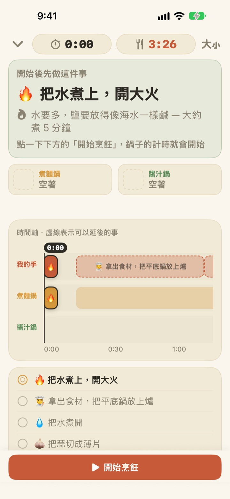
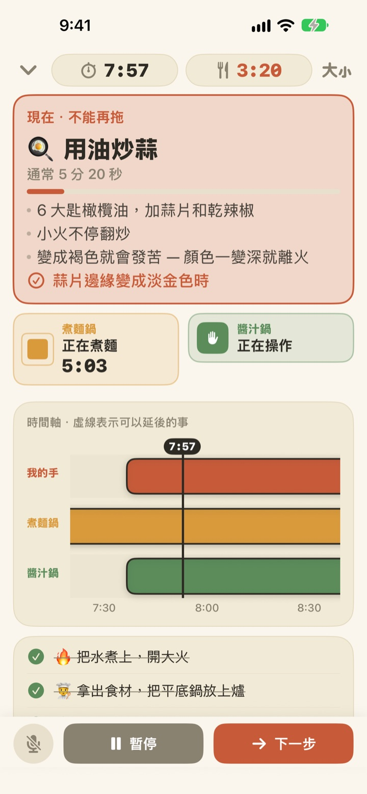
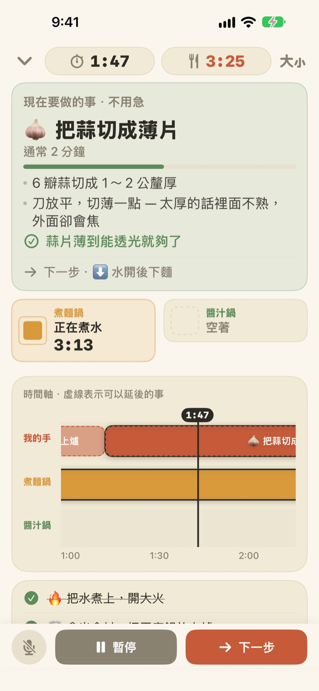
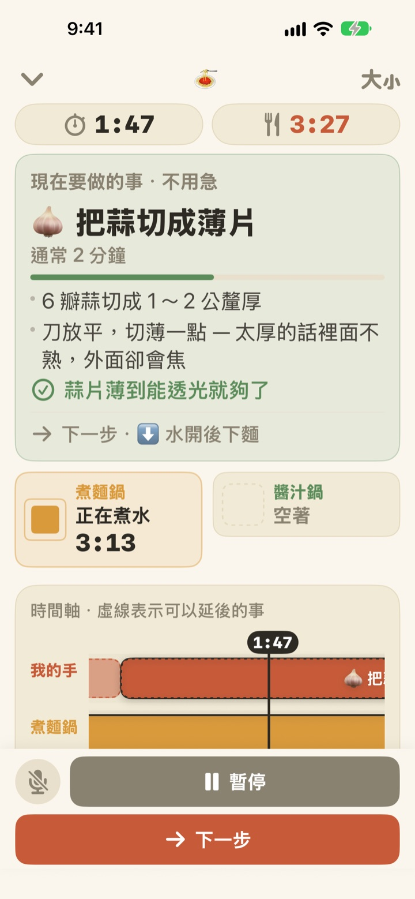

煮麵的同時，
醬汁也好了
兩個鍋子以不同的節奏進行時，Geusaie 只用大字顯示你的手現在要做的那一件事。醬汁的開始時間，會從麵起鍋的那一刻倒推回來。
所有功能免費，不需要帳號。

動手試試
用 20 倍速做一份蒜香橄欖油義大利麵。點一下「開始烹飪」，每當你「做完」一件事就點「下一步」。也看看到了該撈麵的時候，卡片會怎麼變。
設了三個計時器，麵還是煮爛了？
麵一個計時器、醬汁一個計時器，炒蒜的時間還要記在腦子裡，很快就搞不清先做哪個。正在切蒜，錯過了撈麵的時機，醬汁又比麵晚好兩分鐘。Geusaie 把食譜理解成「先做這個，再做那個」，所以只告訴你現在該做的那一件事。
不能等的事一到，卡片就變紅
撈麵、快要炒焦的蒜，這種一耽擱就會毀掉整道菜的事一到，卡片就會變成赤陶色，提醒你先放下手邊的備料。
鍋子好了，就算你沒在看螢幕也會收到通知，並告訴你馬上要做什麼。

備料只在手空的時候做
切蒜片、刨起司、秤量，這些什麼時候做都可以，所以不倒數秒數。手空的時候進度條慢慢增加，鍋子一叫你就暫停，回來後從原處接著做。
晚 3 分鐘開火，後面的事也會一起延後 3 分鐘。時間表每次都依你實際做事的時間重新計算。

立在流理台邊，用聲音進到下一步
字級可以放大四段，退後一兩步也看得清楚；烹飪時螢幕不會關閉。
手是濕的？說下一步，不用碰螢幕就會進到下一件事。

三個步驟就能開始
- 1
選一道菜
看看大概要多久、需要幾個鍋子就能選。
- 2
點一下「開始烹飪」
先顯示第一件要做的事，點下去的那一刻鍋子開始計時。
- 3
做完就「下一步」
點按鈕或說「下一步」，接下來要做的事就會出現。
顏色就是緊急程度
- 綠色
- 備料的事，慢慢來就好。
- 芥末黃
- 輪到鍋子的動作了，現在做就好，不算急。
- 赤陶色
- 再拖下去麵會軟、蒜會焦。現在就做。
- 鍋子格
- 方塊縮小多少，就是還剩多少時間。鍋子的時間從不隱藏。
時間軸上用虛線畫的長條，是可以往後延的事。
所有功能都免費
免費
- 兩道食譜全部可用
- 每個鍋子各自計時，加上完整時間軸
- 鍋子好了會發通知
- 用聲音說「下一步」
- 四段字級
- 透過 Siri 和捷徑直接打開
支持開發者（自由選擇）
- 覺得好用時，可以在設定裡送一點小費
- 小費不會解鎖任何功能，不送也能使用全部功能
每次單獨付款，不是訂閱。
不需要帳號，沒有廣告，沒有網路也能做菜。
常見問題
說了「下一步」卻沒有反應。
左下角的麥克風按鈕是紅色代表正在聆聽，灰色代表已關閉。第一次使用時要同時允許麥克風和語音辨識；如果之前拒絕了，可以到「設定」App > Geusaie 重新打開。App 聽的是「下一步」按鈕上寫的那個詞。廚房很吵的時候，直接點畫面下方的「下一步」就好。
鍋子已經好了，卻沒收到通知。
請到「設定」App > 通知 > Geusaie 確認通知已開啟。開啟專注模式時可能不會響。只有鍋子好了才會通知；切、刨這類備料不會通知，免得催你。
開始晚了，時間表會怎樣？
會依你實際做事的時間重新計算。晚 3 分鐘開火，後面的事也一起延後 3 分鐘；醬汁則依麵起鍋的時間倒推安排。
字太小了。
在烹飪畫面右上角的字級按鈕中，可以選擇標準、大、更大、特大。選好的字級下次會保留。
做菜時螢幕會關掉嗎？
烹飪過程中螢幕不會關閉，手濕著也不用去碰螢幕。
有哪些菜？
蒜香橄欖油義大利麵（約 15 分鐘，兩個鍋子）和番茄奶油義大利麵（約 20 分鐘，兩個鍋子），參考了 Serious Eats、Gimme Some Oven、RecipeTin Eats 和 The Burnt Butter Table 的食譜。只要是兩個鍋子同時開火的菜都很適合，歡迎告訴我們你想加的食譜。
我的聲音會被儲存嗎？
不會。App 只聽「下一步」這一個詞，不錄音也不儲存任何聲音。裝置支援時，語音辨識只在裝置上進行。不收集任何個人資料。
可以用 Siri 打開嗎？
可以。在 Siri 或「捷徑」App 中選一道菜，就會直接打開那道菜的烹飪畫面。準備好煮水、點一下「開始烹飪」後，計時才會開始。
支援哪些裝置？
搭載 iOS 17 或以上版本的 iPhone 和 iPad。不需要帳號，也不需要連網。
怎麼回報問題或推薦食譜？
請透過 App 的設定 > 發送意見回饋，或寄信到下方信箱。附上裝置型號和 iOS 版本，我們能更快找出原因。通常會在幾天內回覆。
遇到問題、發現怪怪的地方，或有想加的食譜，都歡迎寄信到 leeo@kakao.com。